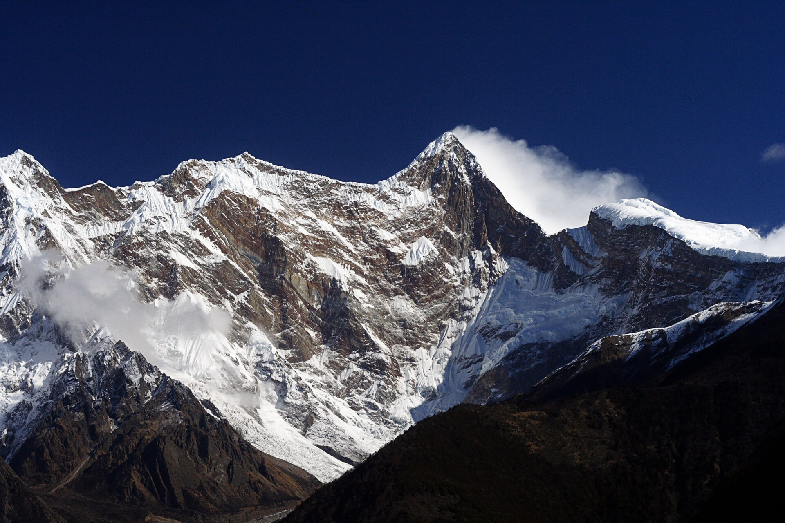
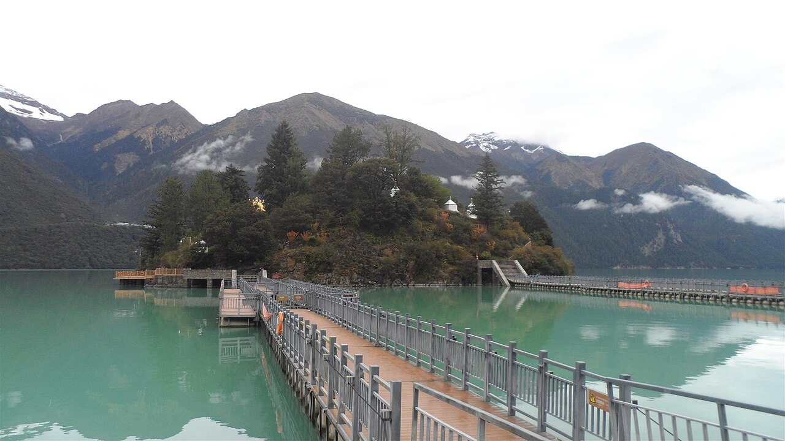
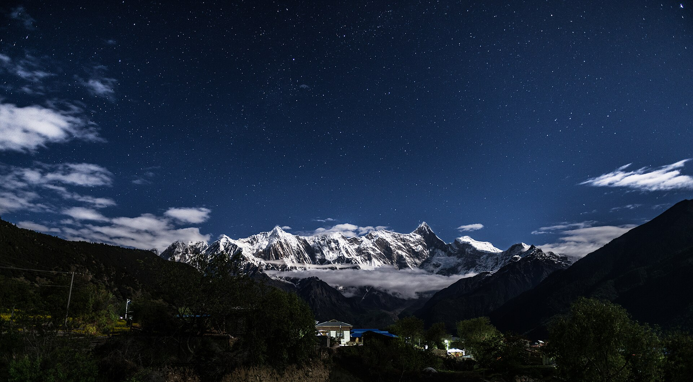

把冬天，
留给雪山。
从林芝的第一道金光，
走到库拉岗日的雪山与湖。
和朋友，一起走这十一天。

THE JOURNEY
十一天。
三种不同的心情。
先去雪山脚下住一晚，
再到湖边和老城，
最后，把时间留给白马林措。
DAY BY DAY
每天，都心里有数。
去哪里、花多久、住多高。选一个日期，慢慢看。
PLACES TO REMEMBER
有些风景，
想和你一起看。
真实的地点，真实的历史照片。
打开一处风景，看看怎么去、停多久。
季节、光线与当天景况会不同。
A GOOD NIGHT
住得舒服，
才能走得从容。
已订与待确认分开看，入住和退房日期不混淆。

巴松措湖区参考图 · 非酒店实拍松赞巴松措林卡。
这一晚，留给湖边。
松赞一晚已订，但具体入住日期仍需核对，暂按12月26日晚排入行程。12月25日晚住宿未确认；慢旅已售罄，需要另选。
12月25日和1月1日晚住宿待落实；松赞已订一晚，具体日期待核。
FLIGHTS & CONNECTIONS
从出发，到归程。
全部时间为北京时间。12月23日重庆中转过夜；1月3日已确认到西安。
航班时刻与航站楼临行复核。本页不含旅客姓名、订单号、票号、联系方式与证件信息。
HIGH ABOVE. SLEEP LOWER.
看见高处，
也知道今晚睡多高。
公路最高点在蒙达拉，约5363米。
白马湖边约4500米。
洛扎与色乡住宿区约3800米。
经过，与停留，是两回事。
短暂翻过5363米山口，与在4500米以上持续徒步数小时，负担不同。住宿海拔也要单独看。
返程，还会再上山。
原路回拉萨需要再过蒙达拉；经措美、哲古去山南也有高山路段，具体接线按当天通行核实。
按身体状态调整。
既往高海拔经验不能代替本次适应。明显不适时停止上升并寻求医疗帮助，不靠赶行程硬撑。
看看整趟路线关系 ＋
图示只表达行程顺序，不是道路轨迹，也不用于导航。
ROOM FOR THE WEATHER
把一月一日，
留给一点不确定。
白马林措优先。
31日徒步后返回洛扎。
1月1日晚待订，2日晚住贡嘎机场店。
BEFORE WE GO
把该准备的，
提前准备好。
重要的事不多，
但每一件，都值得确认。
0127日的新措与拉萨转场＋
直达拉萨约4–5小时；若加新措，估算7–9小时车程加2–3小时轻徒步，连餐休约10–13小时。新措可删减，优先白天安全转场。
26日晚约好车辆、行李、早餐和退房。只有通行与时间都合适才选走新措，约定折返点，避免摸黑山路。
02布达拉宫：日期与预约＋
28日是周一，按现行公告闭馆，安排外景和老城。29日周二入宫，按预约时段走。
最新拉萨官方指南建议提前10天实名预约。12月19日起关注“布达拉宫票务预订系统”微信小程序，22日再检查预约结果。实际放票以当时官方为准。
官方预约指南 ↗03洛扎方向的边境通行手续＋
符合条件的16岁以上内地居民，可通过“移民局12367”App、微信或支付宝小程序申请电子边境管理区通行证。计划目的地包括山南市洛扎县，按系统可选地区与核发范围填写，并随身携带有效身份证件。
官方指南的网上办理时限为3个工作日内作出决定，免费；不要等到进山当天才办理。其他证件或人员类别，按官方适用流程核实。
国家移民管理局办证指南 ↗04白马林措与冬季道路＋
尚未确认本次12月底的开放安排。历史开放或积雪关闭公告，不能代表出行当天状态。临行向当地文旅、司机和住宿方交叉核实。
确认范围包括：进山公路、允许的徒步区域、接驳、积雪与结冰。准备适用的保暖、防滑与照明装备；道路或天气不允许时，保留机动而不强行进入。
查看洛扎县官方信息 ↗055000米湖区与高山口＋
羊湖湖面4441米，岗巴拉观景点接近5000米；普莫5010米，蒙达拉5363米。30日经过这些高处后，下降到洛扎县城住宿。
两湖都按岸边观景安排，不承诺年底蓝冰，不安排上冰面。若出现明显高原不适，停止上升并寻求医疗帮助；以身体情况调整旅行。
高海拔旅行健康资料 ↗06住宿、通信与每天的衔接＋
12月25日和1月1日晚仍待落实；松赞一晚日期待核。31日白马徒步后返回洛扎陇巴庄园，比色乡过夜多一段往返，需重核车程。1月2日晚住贡嘎机场店。
下载离线地图，保存酒店、司机和相关订单。手机、充电宝和相机电池注意低温续航，现金与常用药按个人需要准备。

SEE YOU IN TIBET
计划好每一天。
也给风景，一点余地。
2026.12.24 — 2027.01.03
资料来源与核对说明 2026.11.10 ＋
酒店与航班按已提供信息更新，待订与日期待核事项已单列。公开页面不含姓名、订单号、票号、联系方式或证件信息。车程与海拔是规划参考；天气、开放和道路临行复核。点位说明不替代当地管理或实时导航。
照片来源与授权 真实历史照片 ＋
每张照片保留实际地点、作者和许可。页面可能裁切展示；非冬季照片已标明，群峰照片不冒充白马林措湖面。各图继续遵循其原许可。